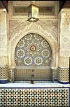
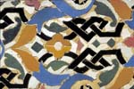
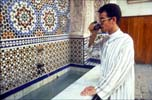
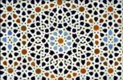
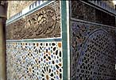
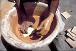
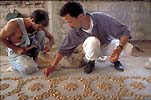
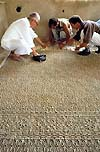
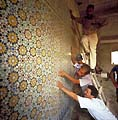

| Zillij in Fez
Written
by Louis Werner
Photographed by Peter Sanders
Reprinted with kind permission of Saudi
Aramco World.


The 17th-century Nejjarine Fountain,
retiled and repaired by two generations of master zlayjis
of the Benslimane family.
Photo
Credits: Peter Sanders/Saudi
Aramco World/PADIA |
Dressed
in a flowing brown jellaba and peaked gray tarboosh,
Abdelatif Benslimane wanders the narrow lanes of Old Fez,
his eyes darting from wall to column to fountain, his
mouth whispering familiar names. "Fifty points inside
eight. Four clasped hands. Spider's house. Empty and full."
This is not the secret patter of a mystic, but rather
the precise terminology of a master craftsman. Benslimane
is a ceramic mosaicist, a zlayji in Moroccan Arabic,
and these are the names of just some of the many patterns
he sees in any short stroll through the old city.
His art of
glazed and cut tiles arranged in complex geometries, known
as zillij, is everywhere in Fez. Its broad range
of color, its infinite possibilities of design and its
sudden pleasure of discovery—around a corner at
eye level or, at a distance, as part of an architectural
whole—all contribute to the striking impression
the city gives that it wears two faces at once: an ageless
beauty masked by a well-worn antiquity.
Titus Burkhardt,
a Swiss art historian and one of the first advisors to
the United Nations Educational, Scientific and Cultural
Organization (UNESCO) on the conservation of the old city,
compared Fez in its bowl-shaped valley to an opened geode,
"brimful of thousands of tightly packed crystals and surrounded
by a silver-green rim; this was Fez, the Old City of Fez,
in the twilight; the countless crystals now come more
clearly into view; one side of them was light, while the
other side had become darkened and weather-beaten." |
| |
|

Zillij, or tilework of Morocco.
Photo
Credits: Peter Sanders/Saudi
Aramco World/PADIA
|
Burkhardt
might have been thinking specifically of the city's crystal-like
zillij work, refracting the sun but darkening in
the dim, covered suqs and lanes. Throughout the
madinah—which is what Old Fez is called locally,
using the Arabic word for "city"—small mosaic panels
and narrow running bands of zillij decorate otherwise
blank walls. They shimmer, hold the eye, and offer release,
creating introspective moments in otherwise boisterous
public spaces.
Although zillij
reached what many consider its apogee in the 16th-century
Saadian Tombs in Marrakesh, and a second flowering in
the many royal palaces and public buildings built throughout
the country between 1961 and 1999 by King Hassan II, it
is in Fez that zillij is best appreciated as an
ever-present adornment of everyday life.
Outside the
madinah, in the sprawling modern city, it graces
apartment building lobbies and office façades, café counters
and sidewalk flower planters. In the madinah it
accents the city's greatest monuments: the 14th-century
Attarine and Bou Inaniyya madrasas (Islamic schools),
the Qarawiyyin mosque and the tomb of Moulay Idriss II,
who founded Fez in the year 809 of the western calendar.
Even the donkeys that carry the old city's burdens drink
from zillij -faced troughs. And Morocco's 20-dirham
bank note is adorned by a fountain designed by a master
zlayji from Fez. |
| |
|
| 
The Nejjarine Fountain, which still offers
water to passerby, uses large star patterns and fills
a lower register with a smaller, all-over pattern.
The Moroccan city of Fez has been likened
to a geode, filled with glittering crystals of art and
architecture. Among its brightest refractions are the
geometric tile works known as zillij, which grace homes,
shops, schools, mosques and streets. Much ofthe best zillij
has been made by members of the last five generations
of the Benslimane family, which has recently opened its
first branch store -- in lower Manhattan.
Photo
Credits: Peter Sanders/Saudi
Aramco World/PADIA
|
Roger
LeTourneau, the leading western historian of Fez, said
that among all of the city's various craftsmen, zlayjis
were most worthy of being called artists, because "their
reputation went beyond the city walls. It was not unusual
for the sultan or a notable personage from another great
Moroccan city to call upon their talent." And among such
zlayjis, not a few of them have come from five
generations of the Benslimane family.
In the 1920's,
at the behest of the newly installed French colonial governor,
Abdelatif Benslimane's grandfather Ahmad retiled the well-known
17th-century Nejjarine Fountain, one of the city's best,
just outside the Funduq Nejjarine. Abdelatif's father,
Muhammad, later repaired Ahmad's jewel, taking apart one
by one the mosaic pieces damaged by rough public use and
mounting them afresh. "Whenever I walk this way," says
Abdelatif, "I bow my head in respect to the masters who
preceded me."
His father
also repaired Nasrid-era zillij in Cordoba and
Granada, Spain and worked five years in Paris. Abdelatif
worked as his apprentice in three royal palaces, the tomb
of King Muhammed V in Rabat, and on the Palais Jamaï Hotel,
one of Fez's finest. He died in 1984, while helping make
the private home of the pasha of Marrakesh into a modern
masterpiece.
Abdelatif,
now 67, learned well from his father. Works of his mature
hand can be found in places near and far—the entryway
and fountain of the Wataniyya Commercial Center on the
new city's main avenue, in five-star hotel lobbies throughout
the country, and even in Jiddah, Saudi Arabia, in the
interior of the Zeinab Mosque. His own son, Muhammad,
recently opened a shop in New York selling his father's
work and his own, designed especially for the North American
market: table-tops, small fountains, decoratively edged
mirrors and patterned runners for kitchen and bath. |
| |
|

Radiating from a central 10-pointed star,
a zillij pattern expands, logically and coherently, toward
infinity.
Photo
Credits: Peter Sanders/Saudi
Aramco World/PADIA
|
Mosaic
work in Morocco is not unique to the Islamic period, and
neither is zillij unique to Morocco. Not far from
Fez lie the remains of the Roman city of Volubilis, where
intricate marble floor mosaics take on myriad forms.
Beginning in
the mid-llth century, North Africa's Almoravid rulers,
and later the Almohads, introduced zillij to the
buildings of their imperial cities in Morocco and Spain.
It can still be seen on important dynastic landmarks such
as the minaret of the Kutubiyya Mosque in Marrakesh, the
Hassan Tower in Rabat and the Giralda in Seville.
Near-cousins
of the art form are also found in lands east of the Mediterranean.
In the 14th century, Tangier-born Ibn Battuta favorably
compared the zillij of his homeland to the eastern
mosaics called qashani. Thirteenth-century Seljuk
Turkey and 12th-century Persia knew the beauty of cut
tile work in floral patterns, and the Egyptian Mamluks
made extensive use of mosaics, marquetry and other patterns
in polychrome stone. |
| |
|

Zillij patterns, including a taqshir
calligraphic border, at the Attarine madrasa (Islamic
school), built in 1325.
Photo
Credits: Peter Sanders/Saudi
Aramco World/PADIA
|
About
Fez, at the beginning of the 13th century, a survey of
the city ordered by the Almohad ruler al-Nasir Muhammad
(1199-1213) counted 188 ceramic workshops. In the 14th
century, historian Ibn Khaldun noted the desire of wealthy
merchants there "to build great houses and decorate them
with ceramics, mosaics, and arabesques."
In later years
in Muslim Spain, or al-Andalus, zillij reached
artistic heights that have never been surpassed, evident
especially in the Alcazar and Alhambra palaces. As Arab
historian Leo Africanus noted, the eventual expulsion
of the Muslims from Spain in 1492 benefited Fez: It provided
the city with an influx not only of great craftsmen, but
also a new class of patrons.
Today, private
patronage is still the key to sustaining labor-intensive
zillij, which—though an unusually expensive
art form—is considered indispensable by Moroccans
of all social and economic stations. Benslimane's clients
range from Shaykh Zayed bin Sultan Al Nahyan, president
of the United Arab Emirates, who owns several houses in
Morocco, to businessmen and countless others of more ordinary
means. New homeowners on even the most limited budgets
often yearn for a traditional Moroccan reception room,
or salon, which means zillij halfway up walls whose
upper portions are finished by elaborately carved stucco
and topped with an inlaid wooden ceiling—and if
they can't afford all of it at once, it is commissioned
piecemeal, over years. |
A typical job for
a zlayji starts with a call from an architect whose client
has asked for a mosaic panel measuring, let us say, two meters
(78") square, to decorate a new home's salon. Any traditional
design and color scheme are possible, but the space and its
proportions impose certain overall constraints: A 50-point star,
for example, needs room for its 24- and 12-point satellite stars,
a common Islamic pattern that Burkhardt called "a shimmering
planetarium, in which each line starts from a center and leads
to a center."
An encyclopedia could
not contain the full array of complex, often individually varied
patterns and the individually shaped, hand-cut tesserae, or
furmah, found in zillij work. Star-based patterns
are identified by their number of points—'itnashari
for 12, 'ishrini for 20, arba' wa 'ishrini for
24 and so on, but they are not necessarily named with exactitude.
The so-called khamsini, for 50 points, and mi'ini,
for 100, actually consist of 48 and 96 points respectively,
because geometry requires that the number of points of any star
in this sequence be divisible by six. (There are also sequences
based on five and on eight.)
Within a single star
pattern, variations abound—by the mix of colors, the size
of the furmah, and the complexity and size of interspacing
elements such as strapping, braids, or "lanterns." And then
there are all the non-star patterns—honeycombs, webs,
steps and shoulders, and checkerboards. The Alhambra's interlocking
zillij patterns were reportedly a source of inspiration
for the tessellations of modern Dutch artist M.C. Escher.
The more commonly
used of the 360 different furmah, according to one scholar's
exhaustive count, run the geometrical gamut from star medallions,
which are used as the center of the star patterns, to chevrons
and triangles, hexagons and octagons, lozenges and diamonds,
and curvilinear and rectilinear strapwork. Organic shapes go
by the names of the objects from which they are abstracted—bottlenecks,
ducks, combs, bracelets, cups and hands. "There are many, too
many for me to remember, but I have almost surely used them
all," says Benslimane.
For one of his current
private commissions, a wall-mounted fountain decorated with
a 24-point star pattern on a square-meter panel (39" square),
Benslimane figures about 5000 furmah will be needed,
consisting of 32 different shapes in eight colors. He works
backward from these numbers to calculate how many square, glazed
"mother tiles," each 10 centimeters (4") on a side, he must
order from the kiln in order to cut this combination of furmah.
The pottery quarter,
where smoke always lingers on the slopes of the Fez River below
the madinah, is located just inside the 18th-century
gate called Bab al-Ftouh. Bi-level, beehive-shaped ovens are
fueled with faytour, or olive pomace, the pits and dry
pulpy material left after olives have been pressed for oil.
Faytour burns at an extraordinarily high temperature.
Tiles are molded of a special, fine-bodied clay from nearby
Jebel Ben Jelliq, which, after being fired, can be scored and
struck to break cleanly along straight lines.
| 
One side of the first tile is glazed,
and then it is fired again. Some of the pigments used
in the glazes are local and traditional; some are imported.
Photo
Credits: Peter Sanders/Saudi
Aramco World/PADIA
|
The glaze
too contains a key local ingredient. A sandy red soil
from Meknes is added to recycled battery lead and kiln-baked
for two days. Then it is milled into a powdered glazing
compound and mixed with water and a pigment. Some pigments
are made locally, such as green from recycled copper and
dark blue and black from mineral ores, while other, modern
colors unknown in older work, such as turquoise, rose
and yellow, are imported.
The tiles are
fired twice, first in the kiln's hotter lower level before
being glazed and again in the upper story after one face
has been dipped in a color bath. A single finished square
costs the zlayji about 10 cents, but broken pieces,
bought at discount prices, will often suffice when the
furmah to be cut from the mother tile are small. |
The next step is
to cut the furmah, and this is a two-stage process. Ahmad
Burqadi is an independent tile cutter, or nqaash, who
frequently fills Benslimane's larger orders. His workshop is
in the old city's busy Bab al-Khokha quarter, and on this day
he and his assistants are cutting furmah called qamarshun,
whose shape is a Greek cross with tapered ends, that measure
about one centimeter (3/8") end to end.
Burqadi uses a finished
qamarshun as a template to ink outlines onto a square
mother tile. Striking it with a chisel-headed hammer against
his anvil's steel tongue, he scores lightly along the drawn
lines and snaps out the rough shape with his hand. He has cut
along sixteen separate edges, and not one has fractured other
than where he intended.
He hands the piece
off to the finish cutter sitting cross-legged beside him before
an anvil with a tongue of terra cotta, which provides the softer
striking surface required for the finer end-work. The finisher
cleans up the shape and bevels the back side so that only the
furmah's glazed edges will touch when set against another
piece.
Burqadi and his helper
can make several hundred of these shapes per day. More delicate
furmah, such as triangled strapwork pieces, take longer
and break more often, so about 80 of these is considered a good
day's output. Because many lengths of strapwork are required
in any design using that motif, a simple 10-point star pattern—the
same one found in the Bou Inaniyya madrasa—would
today cost more than $1500 for a single square-meter panel.
The entry wall to
the prayer room of the Attarine madrasah, built by the
Marinid Sultan Abu Said in 1325, displays a tour de force
of the art of tile cutting. A master nqaash has cut the
calligraphic word Allah (God) less than two centimeters
across, the size of a dime, from a green tile, and also a space
in which to inlay it within a white tile medallion. The curving
edges of the inset and its background match perfectly. From
that center, the pattern expands infinitely to cover the wall
or, potentially, the universe.
The Attarine also
boasts fine examples of another specialty of the nqaash
that is called taqshir, or "peeled work," in which glaze
is scraped off negative areas of the mother tile to leave behind
a shiny pattern in low relief. This serves best to highlight
the calligraphic and floral borders at waist height that top
off the zillij work on walls, most often in black glaze.
The effect is striking, as the exposed terracotta base of the
tile weathers irregularly, setting off the glistening glaze
all the more.
|
Bags of furmah, or individually cut tesserae,
await placement. As many as 5000 of them may be used in
a square-meter panel.
Photo
Credits: Peter Sanders/Saudi
Aramco World/PADIA
|
After
the furmah have been cut and bagged by shape and
color, they are sent to the worksite for mounting. This
last stage is the job of the fraash, or layout artist.
Benslimane's most experienced fraash is Muhammad
Rashidi, who first apprenticed with his boss at the age
of 13 and is now in charge of the wall-mounted fountain
project. |
| |
|
| 
Working on the floor, on which he has
penciled the main lines of the design, the fraash, or
layout artist, arranges the furmah upside-down.
Photo
Credits: Peter Sanders/Saudi Aramco World/PADIA
|
Rashidi
takes a pencil to draw a partial diagram of the 24-point
star pattern on the floor and gradually fills it in, placing
each piece glazed-side down. At dead center is the twelve-pointed
star medallion. From each of its tips sprout two elongated
diamonds, thus giving the pattern its full count of twenty-four.
Radiating around this center is a burst of evenly spaced
eight-pointed star pieces called dirhams.
Starting with
the dirhams, Rashidi lays out all the furmah
of each shape and color in turn, slowly connecting the
star piece coordinates with interspacing elements until
the puzzle is complete. Because the back side of each
furmah is monochromatic and irregularly beveled,
the overall pattern is almost impossible to discern. |
| |
|
| 
Benslimane guides his layout artists.
When the panel is finished, the fraash will walk on it
-- carefully -- to close any remaining gaps.
Photo
Credits: Peter Sanders/Saudi
Aramco World/PADIA

Galaxies of eight-pointed stars cover
a wall in Fez as panels of zillij tilework are mounted
and aligned. This quintessentially Morocan art form is
not created by pressing tiles onto a grouted surface;
rather, it is laid out on a dry floor upside-down,each
tessera placed in precise contact with its neighbors,
the final pattern visible only in the mind of the master
zlayji.
Photo
Credits: Peter Sanders/Saudi
Aramco World/PADIA |
On
this particular project, Rashidi has been at work for
three days. He is confident that the nearly 5000-piece
layout, looking from the blind back side like nothing
more than an irregular relief map, is exact in color and
design, down to the last fingernail-sized furmah.
He laughs when asked why
he cannot adhere individual pieces directly to a wall.
"Stars are the idealized shapes among all of God's works.
Their symmetry is perfect and their spacing is precise.
Such perfection is not reached by creating them piece
by piece."
After a final
firming of the pattern, which he accomplishes by gingerly
walking over the layout to push the pieces toward the
center, Rashidi sprays a powdery cement over the design.
The next day he will apply a seven-centimeter-thick (3")
concrete backing that, when dry, will allow the mosaic
to be attached to a wall as a single panel. Only then
will the brilliance and complexity of the design join
the artistic firmament of the zlayji's universe.
Benslimane
speaks of zillij as being more than simply a combination
of glaze, tile and concrete. "Truthfulness—sidq—is
in everything I make," he says. By this, he means being
true to his metier and faithful to the traditions of his
craft. On one occasion, after a client was late in paying,
Benslimane sold his new car to help his assistants—with
whom he had just completed a particularly fine piece of
work—buy sheep for the annual 'Id al-Adha, or Feast
of the Sacrifice. To this day he drives the old clunker
that replaced that car.
This act of
generosity towards fellow zlayjis underscores what
historian Roger LeTourneau meant when he noted that Fez's
craftsmen feel so well compensated by the respect accorded
them that they are unashamed of their otherwise modest
economic status. "Fez is not," he wrote, "the city of
mystery, as has often been said, but rather the city of
good sense and good living"—values that are embodied
in the art of zillij. |
Louis
Werner (werner
works@msn.com) is a writer and filmmaker living in New York.
Peter Sanders (www.petersanders.com)
has photographed throughout the Islamic world for more than
three decades, and lives near London.
© Saudi
Aramco World
More Articles
|
{kind=link}
{kind=link}
{kind=link}
{kind=link}
{kind=link}
{kind=link}
{kind=link}
{kind=link}
{kind=link}
{kind=link}